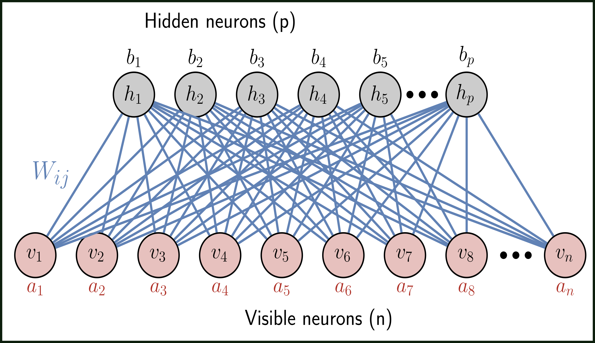

Sabre Kais Group
Quantum Information and Quantum Computation
Demystifying the training dynamics of a Quantum Machine Learning model

Quantum Machine Learning models have gained popularity as an effective substitute to their classical counterparts for various tasks incorporating both classical and quantum data. However, these models are still used as a black box, and knowledge of their inner working are limited. In this talk, we demonstrate how a generative model (called the learner), which expresses a quantum state using neural networks, trains itself by exchanging information among its sub-units in real-time. To quantify the process, we use out-of-time correlators (OTOCs). We analytically illustrate that the imaginary components of such OTOCs can be related to conventional measures of correlation, like mutual information for the learner network. We also rigorously establish the inherent mathematical bounds on such quantities respected by the dynamical evolution during the training of the network. We further explicate how the mere existence of such bounds can be exploited to identify phase transitions in the simulated physical system (called the driver). Such an analysis offers important insights into the training dynamics by unraveling how quantum information is scrambled through such a network, introducing correlation among its constituent sub-systems, and how footprints of correlated behavior from the simulated driver are surreptitiously imprinted onto the representation of the learner. This approach not only demystifies the training of quantum machine learning models but can also shed important insight into the capacitive quality of the model.
Imaginary components of out-of-time-order correlator and information scrambling for navigating the learning landscape of a quantum machine learning model.
Manas Sajjan, Vinit Singh, Raja Selvarajan, and Sabre Kais
Phys. Rev. Research 5, 013146 (2023)